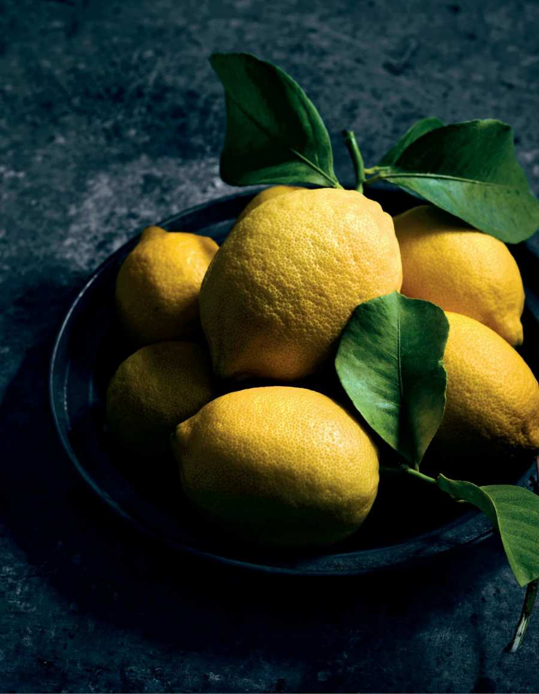
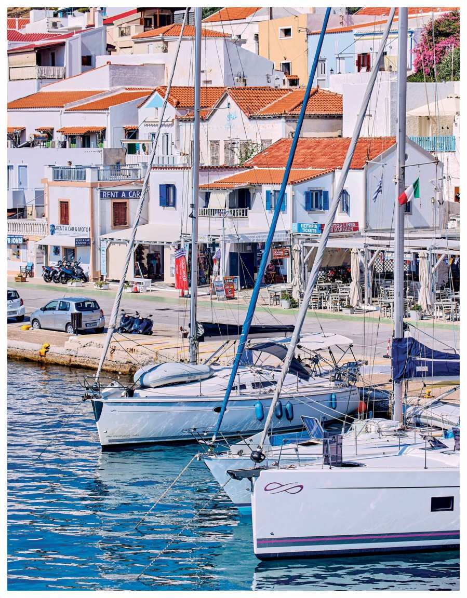

<!DOCTYPE html> <html>
<head>
    <meta http-equiv="Content-Type" content="text/html;charset=utf-8" />
    <meta http-equiv="Cache-Control" content="no-cache, no-store, must-revalidate" />
    <meta http-equiv="Pragma" content="no-cache" />
    <meta http-equiv="Expires" content="0" />
    <link href="style.css" rel="stylesheet" type="text/css" />
    <title>Yassou</title>

    <script>
        // Отключение правой кнопки мыши на всей странице
        document.addEventListener('contextmenu', function(e) {
            e.preventDefault();
            // alert('Копирование и сохранение запрещены!'); // Можно включить для уведомления
        });

        // Отключение выделения текста на всей странице
        document.addEventListener('selectstart', function(e) {
            e.preventDefault();
        });

        // Отключение перетаскивания (для картинок, текста) на всей странице
        document.addEventListener('dragstart', function(e) {
            e.preventDefault();
        });
    </script>
</head>
<body oncontextmenu="return false;" onselectstart="return false;" ondragstart="return false;">
    </html>
<div class="calibre" id="calibre_link-0">
<p id="calibre_link-121" class="calibre1"></p>
<h2 id="calibre_link-122" class="calibre3"><span class="calibre4"><b class="calibre5">YASSOU</b></span></h2>
<p class="calibre6">&nbsp;</p>
<p class="calibre6"><i class="calibre7">a Greek term used as a casual greeting or farewell,</i></p>
<p class="calibre6"><i class="calibre7">to wish another good health, or while raising a glass</i></p>
<div class="calibre8"></div>
<p id="calibre_link-123" class="calibre1"></p>
<p id="calibre_link-124" class="calibre1"></p>
<p id="calibre_link-125" class="calibre6"></p>
<p id="calibre_link-3" class="calibre1">Copyright © 2024 by Shaily Lipa</p>
<p class="calibre1">Photographs copyright © 2024 by Amir Menahem</p>
<p class="calibre1">Cover © 2024 Hachette Book Group, Inc.</p>
<p class="calibre1">Hachette Book Group supports the right to free expression and the value of copyright. The purpose of copyright is to encourage writers and artists to produce the creative works that enrich our culture.</p>
<p class="calibre1">The scanning, uploading, and distribution of this book without permission is a theft of the author’s intellectual property. If you would like permission to use material from the book (other than for review purposes), please contact permissions@hbgusa.com. Thank you for your support of the author’s rights.</p>
<p class="calibre1">Library of Congress Cataloging-in-Publication Data</p>
<p class="calibre1">Names: Lipa, Shaily, author.</p>
<p class="calibre1">Title: Yassou : the simple, seasonal Mediterranean cooking of Greece / Shaily Lipa. Description: New York : Artisan, 2024. | Includes index. | Identifiers: LCCN 2023050017 | ISBN 9781648291852 (hardback) Subjects: LCSH: Cooking, Mediterranean. | Cooking, Greek. | LCGFT: Cookbooks. Classification: LCC TX725.M35 L567 2024 | DDC 641.59/1822&mdash;dc23/eng/20231122 LC record available at https://lccn.loc.gov/2023050017</p>
<p class="calibre1">Design by Suet Chong</p>
<p class="calibre1">Food styling by Amit Farber</p>
<p class="calibre1">Cover design by Suet Chong</p>
<p class="calibre1">Excerpt<a href="#calibre_link-1"> here</a> from Odysseas Elytis, “Anoint the Ariston: XIV,” translated by Olga Broumas, from <i class="calibre7">Eros, Eros, Eros: Selected and Last Poems</i>. Copyright © 1998 by Olga Broumas. Reprinted with the permission of The Permissions Company, LLC, on behalf of Copper Canyon Press, coppercanyonpress.org.</p>
<p class="calibre1">Artisan books may be purchased in bulk for business, educational, or promotional use. For information, please contact your local bookseller or the Hachette Book Group Special Markets Department at special.markets@hbgusa.com.</p>
<p class="calibre1">The publisher is not responsible for websites (or their content) that are not owned by the publisher.</p>
<p class="calibre1">The Hachette Speakers Bureau provides a wide range of authors for speaking events. To find out more, go to hachettespeakersbureau.com or email HachetteSpeakers@hbgusa.com.</p>
<p class="calibre1">Published by Artisan,</p>
<p class="calibre1">an imprint of Workman Publishing,</p>
<p class="calibre1">a division of Hachette Book Group, Inc.</p>
<p id="calibre_link-126" class="calibre1">1290 Avenue of the Americas</p>
<p class="calibre1">New York, NY 10104</p>
<p class="calibre1"><a href="http://artisanbooks.com">artisanbooks.com</a></p>
<p class="calibre1">The Artisan name and logo are registered trademarks of Hachette Book Group, Inc.</p>
<p class="calibre1">First printing, April 2024</p>
<p class="calibre1">ISBN 978-1-648-29422-8</p>
<p class="calibre1">E3-20250206-JV-NF-ORI</p>
<div class="calibre8"></div>
<p id="calibre_link-127" class="calibre1"></p>
<p id="calibre_link-4" class="calibre6"><span class="calibre12"><i class="calibre13">To my Greek grandparents, </i></span></p>
<p class="calibre6"><span class="calibre12"><i class="calibre13">Levana and Angel, </i></span></p>
<p class="calibre6"><span class="calibre12"><i class="calibre13">with whom I had many </i></span></p>
<p class="calibre6"><span class="calibre12"><i class="calibre13">unforgettable Greek meals</i></span></p>
<div class="calibre8"></div>
<p id="calibre_link-128" class="calibre1"></p>
<h2 id="calibre_link-21" class="calibre3"><span class="calibre4"><b class="calibre5">CONTENTS</b></span></h2>
<p class="calibre6">&nbsp;</p>
<p class="calibre6">Cover</p>
<p class="calibre6"><a href="#calibre_link-2">Title Page</a></p>
<p class="calibre6"><a href="#calibre_link-3">Copyright</a></p>
<p class="calibre6"><a href="#calibre_link-4">Dedication</a></p>
<p class="calibre6"><a href="#calibre_link-5">Introduction</a></p>
<p class="calibre6"><a href="#calibre_link-6"><span class="calibre15">ONE</span><span class="calibre12"><b class="calibre5"> </b></span></a></p>
<p class="calibre6"><span class="calibre12"><a href="#calibre_link-6" class="calibre16"><b class="calibre5">Mezes and Starters</b></a></span></p>
<p class="calibre6"><a href="#calibre_link-7"><i class="calibre7">The Cheeses of Greece</i></a></p>
<p class="calibre6"><a href="#calibre_link-8"><span class="calibre15">TWO</span><span class="calibre12"><b class="calibre5"> </b></span></a></p>
<p class="calibre6"><span class="calibre12"><a href="#calibre_link-8" class="calibre16"><b class="calibre5">Patties and Savory Pastries</b></a></span></p>
<p class="calibre6"><a href="#calibre_link-9"><i class="calibre7">The Path of the Olive</i></a></p>
<p class="calibre6"><a href="#calibre_link-10"><span class="calibre15">THREE</span><span class="calibre12"><b class="calibre5"> </b></span></a></p>
<p class="calibre6"><span class="calibre12"><a href="#calibre_link-10" class="calibre16"><b class="calibre5">Stuffed Vegetables</b></a></span></p>
<p class="calibre6"><a href="#calibre_link-11"><i class="calibre7">Drinks: Wine, Ouzo, Tsipouro, and More</i></a></p>
<p class="calibre6"><a href="#calibre_link-12"><span class="calibre15">FOUR</span><span class="calibre12"><b class="calibre5"> </b></span></a></p>
<p class="calibre6"><span class="calibre12"><a href="#calibre_link-12" class="calibre16"><b class="calibre5">Soups and Sides</b></a></span></p>
<p class="calibre6"><a href="#calibre_link-13"><i class="calibre7">Traditional Foods and Greek Ceremonies</i></a></p>
<p class="calibre6"><a href="#calibre_link-14"><span class="calibre15">FIVE</span><span class="calibre12"><b class="calibre5"> </b></span></a></p>
<p class="calibre6"><span class="calibre12"><a href="#calibre_link-14" class="calibre16"><b class="calibre5">Mains</b></a></span></p>
<p class="calibre6"><a href="#calibre_link-15"><i class="calibre7">The Land of Goats and Sheep</i></a></p>
<p class="calibre6"><a href="#calibre_link-16"><span class="calibre15">SIX</span><span class="calibre12"><b class="calibre5"> </b></span></a></p>
<p class="calibre6"><span class="calibre12"><a href="#calibre_link-16" class="calibre16"><b class="calibre5">Sweets</b></a></span></p>
<h2 id="calibre_link-110" class="calibre3"><a href="#calibre_link-17" class="calibre16"><i class="calibre13">The Honey of Greece</i></a></h2>
<p class="calibre6"><a href="#calibre_link-18">Acknowledgments</a></p>
<p class="calibre6"><a href="#calibre_link-19">Index</a></p>
<p class="calibre6"><a href="#calibre_link-20">About the Author</a></p>
<div class="calibre8"></div>
<p id="calibre_link-129" class="calibre1"></p>
<p id="calibre_link-5" class="calibre1"><span class="calibre18"><a href="#calibre_link-21" class="calibre16"><b class="calibre5">Introduction</b></a></span></p>
<p class="calibre6">&nbsp;</p>
<p class="calibre1">In  my  Greek  grandmother’s  living  room  was  an  antique  display  cabinet  where  she  kept  fancy dishes and porcelain cups. It was also the hiding place for her box of homemade marzipan. When I was five I found the stash, but I kept my discovery a secret so my grandma wouldn’t move the marzipan. Every Saturday morning, when the whole family would eat a Greek breakfast on the balcony,  I  would  sneak  into  the  living  room,  carefully  open  the  glass  door,  and  quickly  grab  a marzipan  or  two.  The  sweet  almond  flavor  would  spread  on  my  tongue  and  fill  me  with happiness. That’s why marzipan was one of the first recipes I learned to make.</p>
<p class="calibre19">I’ve been in the kitchen since I can remember. I would stand on a small stool next to my mom</p>
<p class="calibre1">or grandma, following their movements and trying to imitate them. While other girls played with dolls, I sorted rice grains and washed spinach leaves.</p>
<p class="calibre19">My  grandparents  on  my  dad’s  side  came  to  Israel  from  Thessaloniki,  Greece,  and  my</p>
<p class="calibre1">grandparents on my mom’s side came from Istanbul, Turkey. We spoke Ladino (Judeo-Spanish) at home, listened to Greek music, and cooked Balkan food.</p>
<p class="calibre19">This cuisine shaped my culinary style, so when I first traveled to Greece many years ago, I</p>
<p class="calibre1">felt  at  home.  The  bounty  of  fresh  ingredients  and  deep  appreciation  for  seasonal  cooking resonated with my childhood cooking experiences. Ripe tomatoes and eggplants yield delicious salads in the summer, while leek patties and pastries warm the soul in the fall. Hearty soups and stews, rich in legumes and root vegetables, provide comfort throughout the cold months. Pastries rich in syrup are served to guests alongside drinks, and of course, the celebratory roasted lamb remains a centerpiece of every holiday meal.</p>
<p class="calibre19">If you visit Greece, you’re sure to hear the word <i class="calibre7">yassou</i> all around. The expression is a casual</p>
<p class="calibre1">greeting  used  to  say  hello  or  goodbye,  but  the  literal  translation  is  “to  your  health”  (<i class="calibre7">yassou</i>  is actually  composed  of  two  Greek  words:  υγεία  [ya],  meaning  “health,”  and  σου  [sou],  meaning “you”). It is often used as a wish for the well-being and happiness of others, or as a toast when raising a glass. <i class="calibre7">Yassou</i> encompasses the Greeks’ deep value of connecting with loved ones and celebrating life’s important moments together, often over food.</p>
<p class="calibre19">Sharing  a  meal  has  always  been  a  central  part  of  Greek  culture  and  society.  Everything</p>
<p class="calibre1">revolves around food&mdash;and the Greeks talk about it all the time: what ingredients are used in the recipes;  how  they  are  prepared,  seasoned,  and  presented;  and  how  they  smell  and  taste. Conversations  about  food  come  from  all  corners  of  Greek  society:  from  farmers’  markets,  to street vendors with food carts and taverna owners trying to entice customers to enter, to friends sharing recipes and debating weighty matters like the economic impact of food inflation.</p>
<p class="calibre19">Greeks are masters in the art of hospitality. Even in antiquity, hospitality was strongly valued.</p>
<p class="calibre1">Zeus,  the  highest  ruler  of  the  Greek  pantheon,  was  celebrated  as  the  patron  god  of  hospitality, among many other things. Today, Greeks keep this spirit alive. Most Greek homes have special treats on hand in case of an unexpected visitor, such as spoon sweets made by simmering fruits, nuts,  or  vegetables  in  a  sugar  syrup  and  served  with  coffee,  tea,  or  alcohol.  Honoring  familial traditions,  every  Friday,  I  bake  something  sweet,  like  kourabiedes  (almond  butter  cookies), revani  (semolina  cake  in  syrup),  or  baklava  for  the  weekend.  And  in  the  freezer,  there  will always be a package of phyllo dough, in case somebody craves a crispy pastry.</p>
<p id="calibre_link-130" class="calibre19">Greeks  care  deeply  about  maintaining  their  culinary  traditions.  It  is  not  only  a  matter  of</p>
<p class="calibre1">nostalgia  but  a  deep  respect  for  the  flavors  that  have  defined  their  cuisine  for  centuries.  In  a world  of  ever-changing  cooking  trends,  Greek  food  stands  as  eternal  testimony  that  cooking doesn’t need to be fancy or complicated to create flavors that are as vibrant today as they were centuries ago.</p>
<p class="calibre6">&nbsp;</p>
<p class="calibre1"><span class="calibre12"><b class="calibre5">What Makes Greek Food Greek</b></span></p>
<p class="calibre1">The  Greek  table  is  a  celebration  of  the  sun-kissed  bounty  of  the  land  and  sea.  Olive  trees  are abundant  throughout  the  country,  and  Greeks  have  been  cultivating  them  for  more  than  three thousand  years.  Golden  olive  oil  flows  generously  in  almost  every  dish,  savory  or  sweet, throughout  the  country.  The  Mediterranean  climate,  with  relatively  mild  seasons  and  plentiful sunlight,  allows  Greeks  to  enjoy  a  large  variety  of  vegetables  year-round.  Greeks  center  their</p>
<p class="calibre1">meals around vegetables, which they use in meze dishes like Eggplant Spread <a href="#calibre_link-22">(here</a>) and Roasted</p>
<p class="calibre1">Peppers <a href="#calibre_link-23">(here</a>); soups and stews studded with onions, celery, carrots, tomatoes, legumes, grains,</p>
<p class="calibre1">and  more;  or  to  make  flaky  pastries  like  Spanakopita  (<a href="#calibre_link-24">here)</a>,  the  iconic  spinach  pie  beloved throughout the country. Greece is known for its cheeses, producing hundreds of local varieties in quality  boutique  dairies.  It’s  unlikely  that  you’ll  ever  find  a  proper  Greek  meal  that  doesn’t</p>
<p class="calibre1">include feta, whether it’s served as a meze or a filling for Stuffed Zucchini <a href="#calibre_link-25">(here</a>).</p>
<div class="calibre8"></div>
<p id="calibre_link-131" class="calibre1"></p>
<p id="calibre_link-132" class="calibre1"></p>
<p class="calibre19">Northern  Greece  has  mountainous  terrain  and  a  cool  climate  well  suited  to  livestock  and</p>
<p class="calibre1">herding.  Locals  enjoy  many  roasted  meats  and  hearty  stews,  like  Stifado  (<a href="#calibre_link-26">here)</a>,  which  was originally  prepared  with  rabbit  but  today  is  more  commonly  made  with  beef,  pork,  or  lamb, slowly cooked in a rich, aromatic broth with red wine, shallots, garlic, bay leaves, and cinnamon.</p>
<p class="calibre19">As  we  journey  south,  the  landscape  opens  to  sun-drenched  coastlines  and  the  sparkling expanse  of  the  Mediterranean  Sea.  The  seafood  from  this  region  is  renowned,  one  of  the  great culinary  treasures  of  Greece.  Traditional  preparations  enhance  the  fresh  seafood  without</p>
<p id="calibre_link-133" class="calibre1">overpowering its flavor: Grilled octopus glistens from a marinade of red wine and vinegar <a href="#calibre_link-27">(here</a>),</p>
<p class="calibre1">shrimp are poached and enriched with a mixture of olive oil and lemon (<a href="#calibre_link-28">here)</a>, calamari rings are</p>
<p class="calibre1">coated in flour and fried until golden <a href="#calibre_link-29">(here</a>), and fish is elegantly seasoned with herbs and lemon.</p>
<p class="calibre19">The food you will find in Greece today is not so different from what the Greeks ate hundreds</p>
<p class="calibre1">of  years  ago.  But  what  we  view  as  traditional  Greek  cuisine  is  actually  a  reflection  of  the country’s  long  history  as  both  conqueror  and  conquest  before  the  establishment  of  the  First Hellenic  Republic,  and  also  a  culinary  fusion  emerging  from  the  crossroads  of  Europe,  Africa, and Asia.</p>
<p class="calibre19">Venetians  ruled  over  parts  of  Greece  from  the  thirteenth  to  the  eighteenth  centuries,</p>
<p class="calibre1">particularly  the  Ionian  Islands  and  Crete.  They  introduced  to  Greeks  novel  ingredients  and culinary  techniques  that  seamlessly  blended  with  the  native  traditions.  For  example,  pasta,  a Venetian staple, led to the creation of what is now Pastitsio, a baked pasta dish that has evolved</p>
<p class="calibre1">to include layers of ground meat and béchamel sauce <a href="#calibre_link-30">(here</a>).</p>
<p class="calibre19">Venetian trade routes opened a world of spices to Greece, introducing nutmeg, cinnamon, and</p>
<p class="calibre1">cloves,  which  infused  local  dishes  with  new  flavors.  These  warming  aromatics  are  now hallmarks  of  dishes  like  Pastitsada,  a  hearty  chicken  stew  with  a  scented  tomato  sauce  served</p>
<p class="calibre1">over a bed of pasta (<a href="#calibre_link-31">here)</a>. Today, pastitsada is a culinary mainstay, especially on the island of Corfu.</p>
<p class="calibre19">From the fifteenth to the early nineteenth centuries, the Venetians slowly lost their control of</p>
<p class="calibre1">the  majority  of  Greek  land  to  the  Ottoman  Empire.  The  Ottomans  ruled  mainland  Greece  for more  than  four  hundred  years,  and  arguably  had  the  greatest  impact  on  the  native  cuisine. Among  the  notable  influences  were  specific  cooking  techniques  such  as  wrapping  and  grilling, which  gave  rise  to  what  are  now  iconic  dishes  like  stuffed  grape  leaves,  stuffed  cabbage,  and souvlaki (grilled skewered meat). Rice and pastries, staple ingredients in many Greek dishes, are also considered contributions from the Ottoman world.</p>
<p class="calibre19">This  confluence  of  culinary  influences  has  given  rise  to  what  we  know  today  as  the</p>
<p class="calibre1">Mediterranean diet.</p>
<div class="calibre8"></div>
<p id="calibre_link-134" class="calibre1"></p>
<p id="calibre_link-135" class="calibre1"></p>
<p id="calibre_link-136" class="calibre1"></p>
<p id="calibre_link-137" class="calibre1"></p>
<p class="calibre1"><span class="calibre12"><b class="calibre5">The Secrets of the Mediterranean Diet</b></span></p>
<p class="calibre1">The  phenomenon  of  the  Mediterranean  diet  first  entered  the  zeitgeist  in  the  1950s.  Research known as the Seven Countries Study surveyed the dietary habits of the people of Greece, Italy, Yugoslavia  (modern-day  Serbia  and  Croatia),  Japan,  Finland,  the  Netherlands,  and  the  United States.  One  of  the  most  important  findings  was  that  Mediterranean  populations,  compared  to Northern Europeans and Americans, enjoyed overall higher life expectancies with lower rates of chronic  diseases.  The  Greek  island  of  Crete  stood  out  as  a  beacon  of  exceptional  health  and longevity. The study attributed these longer and healthier life spans to the regular consumption of olive oil, grains, fruits, and wild and cultivated greens; moderate intake of wine; and limited amounts of red meat.</p>
<p id="calibre_link-138" class="calibre19">Many other studies have since confirmed the findings of the Seven Countries Study. The Blue</p>
<p class="calibre1">Zones  study,  an  ongoing  research  project  that  explores  factors  that  contribute  to  longevity  in regions known as Blue Zones, has found that the island of Ikaria has some of the highest rates of centenarians  (those  who  live  to  be  100  years  of  age  or  more)  and  some  of  the  lowest  rates  of dementia,  heart  disease,  and  other  chronic  illnesses  in  the  world  thanks  to  their  dietary  habits, active lifestyles, and close-knit culture.</p>
<p class="calibre19">Greeks are the first to tell you that their cuisine is as good for the body as it is for the spirit.</p>
<p class="calibre1">This  wisdom  was  inherited  from  their  ancient  ancestors,  in  fact:  even  Hippocrates  emphasized the  importance  of  a  balanced  diet  to  maintaining  physical  health,  which  in  turn  contributed  to mental and moral health. Throughout history, while other cultures have industrialized their foods and ways of cooking, Greeks have stayed connected to their local food systems and continue to cook foods that are simple, fresh, and nourishing.</p>
<p class="calibre19">The Mediterranean diet represents more than just a collection of recipes; it embodies an entire</p>
<p class="calibre1">philosophy  of  healthy  living  that  includes  nutrition,  community,  and  an  active  lifestyle.  Its enduring  popularity  and  scientific  backing  only  attest  to  its  power  in  promoting  longevity, vitality, and overall well-being.</p>
<p class="calibre6">&nbsp;</p>
<p class="calibre1"><span class="calibre12"><b class="calibre5">About This Book</b></span></p>
<p class="calibre1"><i class="calibre7">Yassou</i> is your guide to fresh, nutritious, and effortlessly delicious meals that capture the warm, inviting  flavors  of  the  Mediterranean.  The  beauty  of  Greek  cooking  is  that  the  less-is-more approach  means  that  none  of  these  recipes  require  fancy  equipment  or  painstaking  technique. Simply seek out the best produce you can find and cook with what’s in season.</p>
<p class="calibre19">These are classic homemade recipes prepared authentically, just as you might enjoy them in</p>
<p class="calibre1">Greece.  Begin  with  mezes,  the  enticing  array  of  small  savory  dishes  that  set  the  stage  for convivial gatherings. Then explore the world of savory pastries, where delicate dough meets the goodness of cheeses or vegetables become delectable patties and crispy fried balls. Discover the art  of  stuffed  vegetables,  where  a  bounty  of  fresh  produce  transforms  into  a  comforting  pot  or pan  of  food.  Complement  your  meals  with  a  chapter  of  soups  and  side  dishes  brimming  with vegetables, grains, and legumes. Delve into seafood mains with different preparation techniques and authentic chicken and meat dishes. And finally, indulge in a delightful selection of sweets, the perfect companions to drinks of all kinds.</p>
<p class="calibre19">Working  on  this  cookbook  was  a  joyous  and  exciting  journey  for  me.  I  got  to  visit  Greece</p>
<p class="calibre1">more  often  than  I  usually  do,  cook  with  friends  and  family,  research  Greek  cuisine,  and experiment  a  lot  in  the  kitchen  to  re-create  the  dishes  I  remember  from  my  childhood. <i class="calibre7">Yassou</i> brings together the classic Greek food that everyone loves and that is closest to my heart.</p>
<p class="calibre19">I hope you will enjoy it as much as I do.</p>
<p id="calibre_link-139" class="calibre23"><i class="calibre7">&mdash;Shaily Lipa</i></p>
<p class="calibre1"></p>
<div class="calibre8"></div>
<h2 id="calibre_link-6" class="calibre3"><span class="calibre24"><a href="#calibre_link-21" class="calibre16">ONE</a></span></h2>
<p class="calibre6">&nbsp;</p>
<p class="calibre6"><span class="calibre25"><a href="#calibre_link-21" class="calibre16"><b class="calibre5">MEZES AND STARTERS</b></a></span></p>
<p class="calibre6">&nbsp;</p>
<p class="calibre26"><b class="calibre27">The word </b><i class="calibre7"><b class="calibre27">meze</b></i><b class="calibre27"> translates to “a bite” or “a taste,” but the origins of the word</b></p>
<p class="calibre26"><b class="calibre27">are  debated.  Some  say  it  made  its  way  into  the  Greek  lexicon  from  the</b></p>
<p class="calibre26"><b class="calibre27">Turkish language, although it is entirely possible that it is ancient Persian or</b></p>
<p class="calibre26"><b class="calibre27">even  Italian.  Either  way,  mezes  are  the  real  attraction  in  Greek  cuisine,  and</b></p>
<p class="calibre26"><b class="calibre27">the variety is endless. These small to medium dishes can range from simple</b></p>
<p class="calibre26"><b class="calibre27">vegetables and salads to dips and cheeses to savory pastries and fried bites.</b></p>
<p class="calibre26"><b class="calibre27">Mezes are the messengers of appetite; the Greeks say that even if you’re not</b></p>
<p class="calibre26"><b class="calibre27">hungry,  the  desire  to  nibble  on  something  will  arrive  the  moment  they  are</b></p>
<p class="calibre26"><b class="calibre27">brought  to  the  table.  The  rich  and  beautiful  meze  spread  is  deeply  rooted  in</b></p>
<p class="calibre26"><b class="calibre27">Greek  culture,  in  which  eating  together  is  a  significant  and  beloved  part  of</b></p>
<p class="calibre26"><b class="calibre27">social  life.  The  mezes  are  served  in  the  center  of  the  table,  oftentimes</b></p>
<p class="calibre26"><b class="calibre27">alongside  alcoholic  drinks.  When  a  party  of  Greeks  enjoy  mezes,  they  are</b></p>
<p class="calibre26"><b class="calibre27">sure to talk, laugh, and sometimes sing, dance, and invite other people to join</b></p>
<p class="calibre26"><b class="calibre27">them, while more and more plates are piled up and more drinks are poured.</b></p>
<p class="calibre26"><b class="calibre27">The ingredients in meze dishes tend to be seasonal, and they are treated with</b></p>
<p class="calibre26"><b class="calibre27">minimal fuss, the key word being </b><i class="calibre7"><b class="calibre27">simplicity</b></i><b class="calibre27">. The simplest of meze dishes are</b></p>
<p class="calibre26"><b class="calibre27">fresh  vegetables  and  cheeses,  such  as  salted  tomato  wedges  or  sliced  feta</b></p>
<p class="calibre26"><b class="calibre27">sprinkled with dried oregano, but the best-known are the classic Greek Salad</b></p>
<p class="calibre26"><b class="calibre27">(<a href="#calibre_link-32">here)</a>&mdash;which features the beloved ingredients of tomatoes, cucumbers, bell</b></p>
<p class="calibre26"><b class="calibre27">peppers,  olives,  and  cheese&mdash;and  Tzatziki  <a href="#calibre_link-33">(here</a>),  a  yogurt-based  dip  that</b></p>
<p class="calibre26"><b class="calibre27">contains  shredded  cucumber,  garlic,  and  fresh  dill.  There  are  also  many</b></p>
<p class="calibre26"><b class="calibre27">salads  of  roasted  or  boiled  vegetables,  such  as  Braised  Leeks  <a href="#calibre_link-34">(here</a>)  and</b></p>
<p class="calibre26"><b class="calibre27">White  Beans  Baked  in  Tomato  Sauce  (<a href="#calibre_link-35">here)</a>,  that  make  great  options  for</b></p>
<p class="calibre26"><b class="calibre27">vegetarians and vegans. Seafood lovers won’t be left out, either, with dishes</b></p>
<p class="calibre26"><b class="calibre27">like Fried Squid (<a href="#calibre_link-36">here)</a> and Grilled Octopus (<a href="#calibre_link-27">here)</a>.</b></p>
<p class="calibre26"><b class="calibre27">Each dish stands on its own and can also be part of almost any type of meal.</b></p>
<p class="calibre26"><b class="calibre27">However, if you want to create a whole classic Greek meze table, you should</b></p>
<p class="calibre26"><b class="calibre27">make  about  two  spreads;  a  salad  of  fresh  vegetables;  one  or  two  dishes  of</b></p>
<p class="calibre26"><b class="calibre27">boiled,  baked,  or  fried  vegetables;  and  some  kind  of  seafood  dish;  all</b></p>
<p class="calibre26"><b class="calibre27">alongside feta, of course, or another fresh, baked, or fried cheese.</b></p>
<div class="calibre8"></div>
<h2 id="calibre_link-140" class="calibre3"><a href="#calibre_link-22" class="calibre16"><b class="calibre5">EGGPLANT SPREAD</b> </a></h2>
<p class="calibre6"><span class="calibre15"><a href="#calibre_link-22">MELITZANOSALATA</a></span></p>
<p class="calibre6"><a href="#calibre_link-33"><b class="calibre27">YOGURT CUCUMBER DIP</b> </a></p>
<p class="calibre6"><span class="calibre15"><a href="#calibre_link-33">TZATZIKI</a></span></p>
<p class="calibre6"><a href="#calibre_link-37"><b class="calibre27">SPLIT PEA SPREAD</b> </a></p>
<p class="calibre6"><span class="calibre15"><a href="#calibre_link-37">FAVA</a></span></p>
<p class="calibre6"><a href="#calibre_link-38"><b class="calibre27">SPICY CHEESE DIP</b> </a></p>
<p class="calibre6"><span class="calibre15"><a href="#calibre_link-38">TIROKAFTERI</a></span></p>
<p class="calibre6"><a href="#calibre_link-39"><b class="calibre27">GARLIC SPREAD</b> </a></p>
<p class="calibre6"><span class="calibre15"><a href="#calibre_link-39">SKORDALIA</a></span></p>
<p class="calibre6"><a href="#calibre_link-40"><b class="calibre27">FISH ROE SPREAD</b> </a></p>
<p class="calibre6"><span class="calibre15"><a href="#calibre_link-40">TARAMOSALATA</a></span></p>
<p class="calibre6"><a href="#calibre_link-41"><b class="calibre27">FRIED ZUCCHINI</b> </a></p>
<p class="calibre6"><span class="calibre15"><a href="#calibre_link-41">KOLOKITHAKIA TIGANITA</a></span></p>
<p class="calibre6"><a href="#calibre_link-23"><b class="calibre27">ROASTED PEPPERS</b> </a></p>
<p class="calibre6"><span class="calibre15"><a href="#calibre_link-23">PIPERIES FLORINIS</a></span></p>
<p class="calibre6"><a href="#calibre_link-42"><b class="calibre27">GREEK BRUSCHETTA</b> </a></p>
<p class="calibre6"><span class="calibre15"><a href="#calibre_link-42">DAKOS</a></span></p>
<p class="calibre6"><a href="#calibre_link-32"><b class="calibre27">GREEK SALAD</b> </a></p>
<p class="calibre6"><span class="calibre15"><a href="#calibre_link-32">HORIATIKI SALATA</a></span></p>
<p class="calibre6"><a href="#calibre_link-43"><b class="calibre27">BEET AND YOGURT SALAD</b> </a></p>
<p class="calibre6"><span class="calibre15"><a href="#calibre_link-43">PANTZAROSALATA</a></span></p>
<p class="calibre6"><a href="#calibre_link-34"><b class="calibre27">BRAISED LEEKS</b> </a></p>
<p class="calibre6"><span class="calibre15"><a href="#calibre_link-34">SALATA PRASSA</a></span></p>
<p class="calibre6"><a href="#calibre_link-44"><b class="calibre27">POTATO SALAD</b> </a></p>
<p class="calibre6"><span class="calibre15"><a href="#calibre_link-44">PATATOSALATA</a></span></p>
<p class="calibre6"><a href="#calibre_link-45"><b class="calibre27">WHITE BEAN SALAD</b> </a></p>
<p class="calibre6"><span class="calibre15"><a href="#calibre_link-45">FASSOLIA PIAZ</a></span></p>
<p class="calibre6"><a href="#calibre_link-35"><b class="calibre27">WHITE BEANS BAKED IN TOMATO SAUCE</b> </a></p>
<p class="calibre6"><span class="calibre15"><a href="#calibre_link-35">GIGANTES PLAKI</a></span></p>
<h2 id="calibre_link-141" class="calibre3"><a href="#calibre_link-46" class="calibre16"><b class="calibre5">BAKED FETA</b> </a></h2>
<p class="calibre6"><span class="calibre15"><a href="#calibre_link-46">FETA PSITI</a></span></p>
<p class="calibre6"><a href="#calibre_link-47"><b class="calibre27">FETA IN CRISPY PHYLLO PASTRY</b> </a></p>
<p class="calibre6"><span class="calibre15"><a href="#calibre_link-47">FETA ME MELI</a></span></p>
<p class="calibre6"><a href="#calibre_link-48"><b class="calibre27">FRIED CHEESE</b> </a></p>
<p class="calibre6"><span class="calibre15"><a href="#calibre_link-48">SAGANAKI</a></span></p>
<p class="calibre6"><a href="#calibre_link-29"><b class="calibre27">FRIED SQUID</b> </a></p>
<p class="calibre6"><span class="calibre15"><a href="#calibre_link-29">KALAMARIA TIGANITA</a></span></p>
<p class="calibre6"><a href="#calibre_link-2
